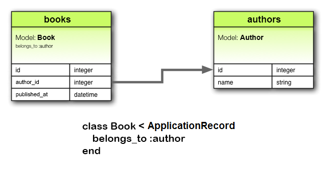
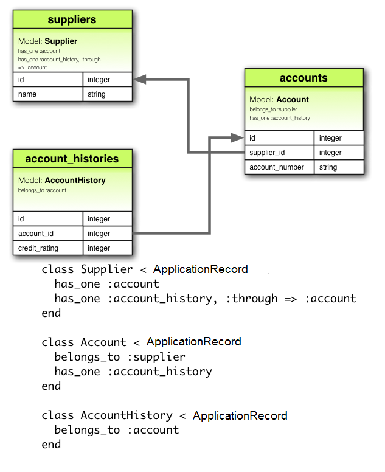

1 為什麼是 Associations？
在 Rails 中，一個 association 是兩個 Active Record models 之間的連線。為什麼我們在 models 之間需要 associations？因為它們使您的程式碼中的常見操作變得更加簡單和容易。例如，考慮一個簡單的 Rails 應用程式，其中包括一個作者模型和一個書籍模型。每個作者可以擁有多本書。如果沒有 associations，模型宣告將如下所示：
class Author < ApplicationRecord
end
class Book < ApplicationRecord
end
現在，假設我們想為現有作者新增一本新書。我們需要做這樣的事情：
@book = Book.create(published_at: Time.now, author_id: @author.id)
或者考慮刪除作者，並確保其所有書籍也被刪除：
@books = Book.where(author_id: @author.id)
@books.each do |book|
book.destroy
end
@author.destroy
使用 Active Record associations，我們可以透過宣告性地告訴 Rails 兩個 models 之間存在連線來簡化這些 - 以及其他 - 操作。這是用於設定作者和書籍的修訂程式碼：
class Author < ApplicationRecord
has_many :books, dependent: :destroy
end
class Book < ApplicationRecord
belongs_to :author
end
透過此更改，為特定作者建立新書變得更加容易：
@book = @author.books.create(published_at: Time.now)
刪除作者及其所有書籍容易得多：
@author.destroy
要了解有關不同型別 associations 的更多資訊，請閱讀本指南的下一部分。接下來是使用 associations 的一些提示和技巧，然後是對 Rails 中 associations 的方法和選項的完整參考。
2 Association 的型別
Rails 支援六種型別的 associations：
Association 是使用宏樣式呼叫實現的，因此您可以宣告性地向 models 新增功能。例如，透過宣告一個模型 belongs_to 另一個，您指示 Rails 維護 Primary Key-Foreign Key 兩個 models 實例之間的資訊，並且您還添加了您的實用方法的模型數量。
在本指南的其餘部分，您將學習如何宣告和使用各種形式的 associations。但首先，快速介紹每種關聯型別適用的情況。
2.1 belongs_to Association
belongs_to association 與另一個 model 建立連線，這樣宣告的 model 的每個實例“屬於”另一個 model 的一個實例。例如，如果您的應用程式包含作者和書籍，並且每本書都可以分配給一個作者，那麼您可以這樣宣告書籍 model：
class Book < ApplicationRecord
belongs_to :author
end

belongs_to associations 必須使用單數術語。如果您在上述示例中對 Book model 中的 author 關聯使用複數形式，並嘗試透過 Book.create(authors: @author) 建立實例，則會告訴您有一個“未初始化的常量 Book::Authors”。這是因為 Rails 會自動從關聯名稱推斷類名稱。如果關聯名稱被錯誤地複數化，那麼推斷的類也會被錯誤地複數化。
相應的 migration 可能如下所示：
class CreateBooks < ActiveRecord::Migration[7.0]
def change
create_table :authors do |t|
t.string :name
t.timestamps
end
create_table :books do |t|
t.belongs_to :author
t.datetime :published_at
t.timestamps
end
end
end
單獨使用時，belongs_to 產生一個單向的一對一連線。因此，上例中的每本書都“知道”其作者，但作者不知道他們的書。
要設定 雙向關聯 - 將 belongs_to 與另一個 model 上的 has_one 或 has_many 結合使用。
belongs_to 不保證引用一致性，因此根據用例，您可能還需要在引用列上新增資料庫級別的外部 key 約束，如下所示：
create_table :books do |t|
t.belongs_to :author, foreign_key: true
# ...
end
2.2 has_one Association
A has_one association 表示另一個 model 引用了這個 model。那個 model 可以透過這個 association 獲取。
例如，如果您的應用程式中的每個供應商只有一個帳戶，您可以像這樣宣告供應商 model：
class Supplier < ApplicationRecord
has_one :account
end
與 belongs_to 的主要差別在於連結列 supplier_id 位於另一個表中：

相應的 migration 可能如下所示：
class CreateSuppliers < ActiveRecord::Migration[7.0]
def change
create_table :suppliers do |t|
t.string :name
t.timestamps
end
create_table :accounts do |t|
t.belongs_to :supplier
t.string :account_number
t.timestamps
end
end
end
根據用例，您可能還需要建立唯一索引和/或 帳戶表的供應商列上的外部 key 約束。在這 在這種情況下，列定義可能如下所示：
create_table :accounts do |t|
t.belongs_to :supplier, index: { unique: true }, foreign_key: true
# ...
end
當與另一個 model 上的 belongs_to 結合使用時，這種關係可以是 雙向。
2.3 has_many Association
A has_many association 類似於 has_one，但表示與另一個 model 是一對多連線。您經常會在 belongs_to association 的“另一側”找到此 association。這個 association 表示 model 的每個實例都有零個或多個另一個 model 的實例。例如，在包含作者和書籍的應用程式中，作者 model 可以這樣宣告：
class Author < ApplicationRecord
has_many :books
end
另一個model的名字在宣告一個has_many association的時候是複數的。

相應的 migration 可能如下所示：
class CreateAuthors < ActiveRecord::Migration[7.0]
def change
create_table :authors do |t|
t.string :name
t.timestamps
end
create_table :books do |t|
t.belongs_to :author
t.datetime :published_at
t.timestamps
end
end
end
根據用例，建立非唯一索引和可選的索引通常是個好主意 書籍表的作者列上的外部 key 約束：
create_table :books do |t|
t.belongs_to :author, index: true, foreign_key: true
# ...
end
2.4 has_many :through Association
A has_many :through association 通常用於與另一個 model 建立多對多連線。這個 association 表明宣告的 model 可以透過透過第三個 model 與另一個 model 的零個或多個實例匹配。例如，考慮患者預約看醫生的醫療實踐。相關的 association 宣告可能如下所示：
class Physician < ApplicationRecord
has_many :appointments
has_many :patients, through: :appointments
end
class Appointment < ApplicationRecord
belongs_to :physician
belongs_to :patient
end
class Patient < ApplicationRecord
has_many :appointments
has_many :physicians, through: :appointments
end

相應的 migration 可能如下所示：
class CreateAppointments < ActiveRecord::Migration[7.0]
def change
create_table :physicians do |t|
t.string :name
t.timestamps
end
create_table :patients do |t|
t.string :name
t.timestamps
end
create_table :appointments do |t|
t.belongs_to :physician
t.belongs_to :patient
t.datetime :appointment_date
t.timestamps
end
end
end
可以透過 has_many association 方法 管理 join models 的集合。
例如，如果您分配：
physician.patients = patients
然後為新關聯的物件自動建立新的聯接 models。 如果以前存在的一些現在丟失，則它們的連線行將被自動刪除。
自動刪除加入 models 是直接的，不會觸發 callbacks 銷燬。
has_many :through 關聯對於透過巢狀的 has_many associations 設定“快捷方式”也很有用。例如，如果一個文件有很多節，而一個節有很多段落，您有時可能想要獲取文件中所有段落的簡單集合。你可以這樣設定：
class Document < ApplicationRecord
has_many :sections
has_many :paragraphs, through: :sections
end
class Section < ApplicationRecord
belongs_to :document
has_many :paragraphs
end
class Paragraph < ApplicationRecord
belongs_to :section
end
指定 through: :sections 後，Rails 現在將理解：
@document.paragraphs
2.5 has_one :through Association
has_one :through association 與另一個 model 建立一對一連線。這個 association 表示
透過繼續透過第三個 model，宣告的 model 可以與另一個 model 的一個實例匹配。
例如，如果每個供應商都有一個帳戶，並且每個帳戶都關聯一個帳戶歷史記錄，則
供應商 model 可能如下所示：
class Supplier < ApplicationRecord
has_one :account
has_one :account_history, through: :account
end
class Account < ApplicationRecord
belongs_to :supplier
has_one :account_history
end
class AccountHistory < ApplicationRecord
belongs_to :account
end

相應的 migration 可能如下所示：
class CreateAccountHistories < ActiveRecord::Migration[7.0]
def change
create_table :suppliers do |t|
t.string :name
t.timestamps
end
create_table :accounts do |t|
t.belongs_to :supplier
t.string :account_number
t.timestamps
end
create_table :account_histories do |t|
t.belongs_to :account
t.integer :credit_rating
t.timestamps
end
end
end
2.6 has_and_belongs_to_many Association
has_and_belongs_to_many association 建立與另一個 model 的直接多對多連線，沒有中間的 model。
這個 association 表示宣告的 model 的每個實例引用另一個 model 的零個或多個實例。
例如，如果您的應用程式包括裝配體和零件，每個裝配體都有許多零件並且每個零件出現在許多裝配體中，您可以這樣宣告 models：
class Assembly < ApplicationRecord
has_and_belongs_to_many :parts
end
class Part < ApplicationRecord
has_and_belongs_to_many :assemblies
end

相應的 migration 可能如下所示：
class CreateAssembliesAndParts < ActiveRecord::Migration[7.0]
def change
create_table :assemblies do |t|
t.string :name
t.timestamps
end
create_table :parts do |t|
t.string :part_number
t.timestamps
end
create_table :assemblies_parts, id: false do |t|
t.belongs_to :assembly
t.belongs_to :part
end
end
end
2.7 在 belongs_to 和 has_one 之間進行選擇
如果要在兩個 models 之間建立一對一的關係，則需要將 belongs_to 新增到一個，並將 has_one 新增到另一個。你怎麼知道哪個是哪個？
差別在於您放置外部 key 的位置（它在宣告 belongs_to association 的類的表上），但您也應該考慮一下資料的實際含義。 has_one 關係表明某物是你的——也就是說，某物指向你。例如，說一個供應商擁有一個賬戶比一個賬戶擁有一個供應商更有意義。這表明正確的關係是這樣的：
class Supplier < ApplicationRecord
has_one :account
end
class Account < ApplicationRecord
belongs_to :supplier
end
相應的 migration 可能如下所示：
class CreateSuppliers < ActiveRecord::Migration[7.0]
def change
create_table :suppliers do |t|
t.string :name
t.timestamps
end
create_table :accounts do |t|
t.bigint :supplier_id
t.string :account_number
t.timestamps
end
add_index :accounts, :supplier_id
end
end
使用 t.bigint :supplier_id 使外部 key 命名變得明顯和明確。在當前版本的 Rails 中，您可以透過使用 t.references :supplier 來抽象出這個實現細節。
2.8 在 has_many :through 和 has_and_belongs_to_many 之間進行選擇
Rails 提供了兩種不同的方式來宣告 models 之間的多對多關係。第一種方式是使用has_and_belongs_to_many，它可以讓你直接製作association：
class Assembly < ApplicationRecord
has_and_belongs_to_many :parts
end
class Part < ApplicationRecord
has_and_belongs_to_many :assemblies
end
第二種宣告多對多關係的方法是使用 has_many :through。這使得 association 間接透過一個 join model：
class Assembly < ApplicationRecord
has_many :manifests
has_many :parts, through: :manifests
end
class Manifest < ApplicationRecord
belongs_to :assembly
belongs_to :part
end
class Part < ApplicationRecord
has_many :manifests
has_many :assemblies, through: :manifests
end
最簡單的經驗法則是，如果您需要將關係 model 作為獨立實體處理，則應設定 has_many :through 關係。如果您不需要對 model 關係做任何事情，那麼設定 has_and_belongs_to_many 關係可能更簡單（儘管您需要記住在資料庫中建立連線表）。
如果您需要驗證、callbacks 或連線 model 的額外屬性，則應使用 has_many :through。
2.9 多型 Associations
associations 的一個更高階的轉折是多型關聯。使用多型 associations，一個 model 可以在單個關聯上屬於多個其他 model。例如，您可能有一張屬於員工 model 或產品 model 的圖片 model。以下是如何宣告：
class Picture < ApplicationRecord
belongs_to :imageable, polymorphic: true
end
class Employee < ApplicationRecord
has_many :pictures, as: :imageable
end
class Product < ApplicationRecord
has_many :pictures, as: :imageable
end
您可以將多型 belongs_to 宣告視為設定任何其他 model 可以使用的介面。從 Employee model 的實例中，您可以檢索一組圖片：@employee.pictures。
同樣，您可以檢索 @product.pictures。
如果您有 Picture model 的實例，則可以透過 @picture.imageable 訪問其父級。為了使這個工作，你需要在 model 中宣告一個外部的 key 列和一個宣告多型介面的型別列：
class CreatePictures < ActiveRecord::Migration[7.0]
def change
create_table :pictures do |t|
t.string :name
t.bigint :imageable_id
t.string :imageable_type
t.timestamps
end
add_index :pictures, [:imageable_type, :imageable_id]
end
end
這個 migration 可以透過使用 t.references 形式來簡化：
class CreatePictures < ActiveRecord::Migration[7.0]
def change
create_table :pictures do |t|
t.string :name
t.references :imageable, polymorphic: true
t.timestamps
end
end
end

2.10 自加入
在設計一個數據 model 時，你有時會發現一個 model 應該和它自己有關係。例如，您可能希望將所有員工儲存在單個數據庫 model 中，但能夠跟蹤諸如經理和下屬之間的關係。這種情況可以用自加入associations進行modeled：
class Employee < ApplicationRecord
has_many :subordinates, class_name: "Employee",
foreign_key: "manager_id"
belongs_to :manager, class_name: "Employee", optional: true
end
透過此設定，您可以檢索 @employee.subordinates 和 @employee.manager。
在您的 migrations/架構中，您將向 model 本身新增一個引用列。
class CreateEmployees < ActiveRecord::Migration[7.0]
def change
create_table :employees do |t|
t.references :manager, foreign_key: { to_table: :employees }
t.timestamps
end
end
end
3 提示、技巧和警告
為了在 Rails 應用程式中有效使用 Active Record associations，您應該瞭解以下幾點：
- 控制快取
- 避免名稱衝突
- 更新架構
- 控制 association 範圍
- 雙向associations
3.1 控制快取
所有的 association 方法都是圍繞快取構建的，它使最新查詢的結果可用於進一步的操作。快取甚至可以跨方法共享。例如：
# 從資料庫中檢索書籍
author.books.load
# 使用快取的書籍副本
author.books.size
# 使用快取的書籍副本
author.books.empty?
但是如果您想重新載入快取怎麼辦，因為應用程式的其他部分可能已經更改了資料？只需在 association 上呼叫 reload：
# 從資料庫中檢索書籍
author.books.load
# 使用快取的書籍副本
author.books.size
# 丟棄快取的書籍副本並返回到資料庫
author.books.reload.empty?
3.2 避免名稱衝突
您不能隨意為 associations 使用任何名稱。因為建立關聯會將具有該名稱的方法新增到 model，所以給關聯一個已經用於 ActiveRecord::Base 實例方法的名稱是一個壞主意。關聯方法將覆蓋基本方法並破壞事物。例如，attributes 或 connection 是 associations 的壞名稱。
3.3 更新架構
Association 非常有用，但它們並不神奇。您負責維護您的資料庫架構以匹配您的關聯。實際上，這意味著兩件事，具體取決於您要建立的關聯型別。對於 belongs_to 關聯，您需要建立外部 keys，對於 has_and_belongs_to_many 關聯，您需要建立適當的連線表。
3.3.1 為 belongs_to Association 建立外部 Key
當你宣告一個belongs_to association時，你需要根據情況建立外部的keys。例如，考慮這個 model：
class Book < ApplicationRecord
belongs_to :author
end
這個宣告需要得到books表中對應的外部key列的支援。對於全新的表，migration 可能如下所示：
class CreateBooks < ActiveRecord::Migration[7.0]
def change
create_table :books do |t|
t.datetime :published_at
t.string :book_number
t.references :author
end
end
end
而對於現有表，它可能如下所示：
class AddAuthorToBooks < ActiveRecord::Migration[7.0]
def change
add_reference :books, :author
end
end
如果您希望在資料庫級別實施參照完整性，請將 foreign_key: true 選項新增到上面的“reference”列宣告中。
3.3.2 為 has_and_belongs_to_many Association 建立連線表
如果建立了 has_and_belongs_to_many association，則需要顯式建立聯接表。除非使用 :join_table 選項顯式指定連線表的名稱，否則 Active Record 將使用類名稱的詞法順序建立名稱。因此，author 和 book models 之間的連線將給出預設的連線表名稱“authors_books”，因為“a”在詞法排序中高於“b”。
model 名稱之間的優先順序是使用 String 的 <=> 運算子計算的。這意味著，如果字串的長度不同，並且在與最短長度相比時字串相等，那麼較長的字串被認為比較短的字串具有更高的詞彙優先順序。例如，由於名稱“paper_boxes”的長度，人們會期望表“paper_boxes”和“papers”生成“papers_paper_boxes”的連線表名稱，但實際上它生成的連線表名稱為“paper_boxes_papers”（因為下劃線 '_' 在字典上比普通編碼中的 's' 少）。
無論名稱如何，您都必須使用適當的 migration 手動生成連線表。例如，考慮這些 associations：
class Assembly < ApplicationRecord
has_and_belongs_to_many :parts
end
class Part < ApplicationRecord
has_and_belongs_to_many :assemblies
end
這些需要由 migration 備份以建立 assemblies_parts 表。這個表應該在沒有主 key 的情況下建立：
class CreateAssembliesPartsJoinTable < ActiveRecord::Migration[7.0]
def change
create_table :assemblies_parts, id: false do |t|
t.bigint :assembly_id
t.bigint :part_id
end
add_index :assemblies_parts, :assembly_id
add_index :assemblies_parts, :part_id
end
end
我們將 id: false 傳遞給 create_table，因為該表不代表 model。這是 association 正常工作所必需的。如果您在 has_and_belongs_to_many association 中觀察到任何奇怪的行為，例如損壞的 model ID，或者有關衝突 ID 的異常，那麼您很可能忘記了這一點。
您也可以使用方法 create_join_table
class CreateAssembliesPartsJoinTable < ActiveRecord::Migration[7.0]
def change
create_join_table :assemblies, :parts do |t|
t.index :assembly_id
t.index :part_id
end
end
end
3.4 控制 Association 範圍
預設情況下，associations 僅在當前 module 的範圍內查詢物件。當您在 module 中宣告 Active Record models 時，這一點很重要。例如：
module MyApplication
module Business
class Supplier < ApplicationRecord
has_one :account
end
class Account < ApplicationRecord
belongs_to :supplier
end
end
end
這會正常工作，因為 Supplier 和 Account 類都定義在同一範圍內。但以下將不工作，因為 Supplier 和 Account 定義在不同的範圍內：
module MyApplication
module Business
class Supplier < ApplicationRecord
has_one :account
end
end
module Billing
class Account < ApplicationRecord
belongs_to :supplier
end
end
end
要將 model 與不同名稱空間中的 model 關聯，您必須在 association 宣告中指定完整的類名：
module MyApplication
module Business
class Supplier < ApplicationRecord
has_one :account,
class_name: "MyApplication::Billing::Account"
end
end
module Billing
class Account < ApplicationRecord
belongs_to :supplier,
class_name: "MyApplication::Business::Supplier"
end
end
end
3.5 雙向 Associations
associations 工作在兩個方向是正常的，需要在兩個不同的 models 上宣告：
class Author < ApplicationRecord
has_many :books
end
class Book < ApplicationRecord
belongs_to :author
end
Active Record 將嘗試根據 association 名稱自動識別這兩個 models 共享一個雙向 association。這樣，Active Record 將只加載 Author 物件的一個副本，使您的應用程式更高效並防止資料不一致：
irb> a = Author.first
irb> b = a.books.first
irb> a.first_name == b.author.first_name
=> true
irb> a.first_name = 'David'
irb> a.first_name == b.author.first_name
=> true
Active Record 支援對大多數 associations 標準名稱的自動識別。但是，Active Record 不會自動識別包含範圍或以下任何選項的雙向 associations：
:through:foreign_key
例如，考慮以下 model 宣告：
class Author < ApplicationRecord
has_many :books
end
class Book < ApplicationRecord
belongs_to :writer, class_name: 'Author', foreign_key: 'author_id'
end
Active Record 將不再自動識別雙向 association：
irb> a = Author.first
irb> b = a.books.first
irb> a.first_name == b.writer.first_name
=> true
irb> a.first_name = 'David'
irb> a.first_name == b.writer.first_name
=> false
Active Record 提供了 :inverse_of 選項，因此您可以顯式宣告雙向 associations：
class Author < ApplicationRecord
has_many :books, inverse_of: 'writer'
end
class Book < ApplicationRecord
belongs_to :writer, class_name: 'Author', foreign_key: 'author_id'
end
透過在 has_many association 宣告中包含 :inverse_of 選項，Active Record 現在將識別雙向 association：
irb> a = Author.first
irb> b = a.books.first
irb> a.first_name == b.writer.first_name
=> true
irb> a.first_name = 'David'
irb> a.first_name == b.writer.first_name
=> true
4 詳細的Association參考
以下部分提供了每種型別的 association 的詳細資訊，包括它們新增的方法以及宣告 association 時可以使用的選項。
4.1 belongs_to Association 參考
在資料庫術語中，belongs_to association 表示這個 model 的表包含一個表示對另一個表的引用的列。
這可用於設定一對一或一對多關係，具體取決於設定。
如果另一個類的表包含一對一關係的引用，那麼您應該使用 has_one 代替。
4.1.1 方法由 belongs_to 新增
當你宣告一個 belongs_to association 時，宣告類會自動獲得 8 個與 association 相關的方法：
associationassociation=(associate)build_association(attributes = {})create_association(attributes = {})create_association!(attributes = {})reload_associationassociation_changed?association_previously_changed?
在所有這些方法中，association 被替換為作為第一個引數傳遞給 belongs_to 的 symbol。例如，給定宣告：
class Book < ApplicationRecord
belongs_to :author
end
Book model 的每個實例都有這些方法：
author
author=
build_author
create_author
create_author!
reload_author
author_changed?
author_previously_changed?
初始化新的 has_one 或 belongs_to 關聯時，您必須使用 build_ 字首來構建關聯，而不是用於 has_many 或 has_and_belongs_to_many ZHTW_13 的 association.build 方法。要建立一個，請使用 create_ 字首。
4.1.1.1 association
association 方法返回關聯的物件（如果有）。如果未找到關聯物件，則返回 nil。
@author = @book.author
如果已為此物件從資料庫中檢索到關聯物件，則將返回快取版本。要覆蓋此行為（並強制讀取資料庫），請在父物件上呼叫 #reload_association。
@author = @book.reload_author
4.1.1.2 association=(associate)
association= 方法將關聯的物件分配給該物件。在幕後，這意味著從關聯物件中提取主 key 並將此物件的外部 key 設定為相同的 value。
@book.author = @author
4.1.1.3 build_association(attributes = {})
build_association 方法返回關聯型別的新物件。這個物件將從傳遞的屬性中實例化，並且透過這個物件的外部 key 的連結將被設定，但關聯的物件將不被儲存。
@author = @book.build_author(author_number: 123,
author_name: "John Doe")
4.1.1.4 create_association(attributes = {})
create_association 方法返回關聯型別的新物件。這個物件將從傳遞的屬性中實例化，透過這個物件的外部 key 的連結將被設定，並且一旦它透過關聯的 model 上指定的所有驗證，關聯的物件將被儲存。
@author = @book.create_author(author_number: 123,
author_name: "John Doe")
4.1.1.5 create_association!(attributes = {})
與上面的 create_association 相同，但如果記錄無效，則會引發 ActiveRecord::RecordInvalid。
4.1.1.6 association_changed?
如果已分配新的關聯物件，則 association_changed? 方法返回 true，並且外部 key 將在下次儲存時更新。
@book.author # => #<Book author_number: 123, author_name: "John Doe">
@book.author_changed? # => false
@book.author = Author.second # => #<Book author_number: 456, author_name: "Jane Smith">
@book.author_changed? # => true
@book.save!
@book.author_changed? # => false
4.1.1.7 association_previously_changed?
如果之前的儲存更新了 association 以引用新的關聯物件，則 association_previously_changed? 方法返回 true。
@book.author # => #<Book author_number: 123, author_name: "John Doe">
@book.author_previously_changed? # => false
@book.author = Author.second # => #<Book author_number: 456, author_name: "Jane Smith">
@book.save!
@book.author_previously_changed? # => true
4.1.2 belongs_to 的選項
儘管 Rails 使用在大多數情況下都能很好地工作的智慧預設值，但有時您可能希望自定義 belongs_to association 引用的行為。透過在建立 association 時傳遞選項和範圍塊，可以輕鬆完成此類自定義。例如，這個 association 使用兩個這樣的選項：
class Book < ApplicationRecord
belongs_to :author, touch: :books_updated_at,
counter_cache: true
end
belongs_to association 支援以下選項：
:autosave:class_name:counter_cache:dependent:foreign_key:primary_key:inverse_of:polymorphic:touch:validate:optional
4.1.2.1 :autosave
如果您將 :autosave 選項設定為 true，Rails 將儲存任何載入的 association 成員，並在您儲存父物件時銷燬標記為銷燬的成員。將 :autosave 設定為 false 與不設定 :autosave 選項不同。如果 :autosave 選項不存在，則將儲存新的關聯物件，但不會儲存更新的關聯物件。
4.1.2.2 :class_name
如果其他 model 的名稱無法從 association 名稱派生，您可以使用 :class_name 選項來提供 model 名稱。例如，如果一本書屬於作者，但包含作者的 model 的實際名稱是 Patron，您可以這樣設定：
class Book < ApplicationRecord
belongs_to :author, class_name: "Patron"
end
4.1.2.3 :counter_cache
:counter_cache 選項可用於更有效地查詢所屬物件的數量。考慮這些 models：
class Book < ApplicationRecord
belongs_to :author
end
class Author < ApplicationRecord
has_many :books
end
透過這些宣告，請求 @author.books.size 的 value 需要呼叫資料庫來執行 COUNT(*) 查詢。為避免此呼叫，您可以向 belonging model 新增計數器快取：
class Book < ApplicationRecord
belongs_to :author, counter_cache: true
end
class Author < ApplicationRecord
has_many :books
end
有了這個宣告，Rails 將保持快取 value 是最新的，然後返回 value 以回應 size 方法。
儘管在 model 上指定了 :counter_cache 選項，其中包括
belongs_to 宣告，實際列必須新增到
相關 (has_many) model。在上述情況下，您需要新增一個
名為 books_count 的列到 Author model。
您可以透過在中指定自定義列名來覆蓋預設列名
counter_cache 宣告而不是 true。例如，要使用
count_of_books 而不是 books_count：
class Book < ApplicationRecord
belongs_to :author, counter_cache: :count_of_books
end
class Author < ApplicationRecord
has_many :books
end
你只需要在 belongs_to 上指定 :counter_cache 選項
association 的一側。
計數器快取列透過 attr_readonly 新增到包含 model 的只讀屬性列表中。
4.1.2.4 :dependent
如果您將 :dependent 選項設定為：
-
:destroy，當物件被銷燬時，會在其上呼叫destroy關聯的物件。 -
:delete，當物件被銷燬時，其關聯的所有物件都會被銷燬 直接從資料庫中刪除而不呼叫他們的destroy方法。 -
:destroy_async：當物件被銷燬時，一個ActiveRecord::DestroyAssociationAsyncJob作業已入隊，它將對其關聯的物件呼叫銷燬。 Active Job 必須設定 為了這個工作。
您不應在與其他類上的 has_many association 連線的 belongs_to association 上指定此選項。這樣做可能會導致資料庫中出現孤立記錄。
4.1.2.5 :foreign_key
按照慣例，Rails 假定用於儲存此 model 上的外部 key 的列是新增字尾 _id 的 association 的名稱。 :foreign_key 選項可以讓你直接設定外部 key 的名稱：
class Book < ApplicationRecord
belongs_to :author, class_name: "Patron",
foreign_key: "patron_id"
end
提示：在任何情況下，Rails 都不會為您建立外部 key 列。您需要將它們明確定義為 migrations 的一部分。
4.1.2.6 :primary_key
按照慣例，Rails 假定 id 列用於儲存主要的 key
它的表。 :primary_key 選項允許您指定不同的列。
例如，假設我們有一個 users 表，其中 guid 作為主 key。如果我們想要一個單獨的 todos 表來儲存 guid 列中的外部 key user_id，那麼我們可以像這樣使用 primary_key 來實現：
class User < ApplicationRecord
self.primary_key = 'guid' # primary key is guid and not id
end
class Todo < ApplicationRecord
belongs_to :user, primary_key: 'guid'
end
當我們執行 @user.todos.create 時，@todo 記錄將有它的
user_id value 作為 @user 的 guid value。
4.1.2.7 :inverse_of
:inverse_of 選項指定 has_many 或 has_one association 的名稱，它是此 association 的倒數。
class Author < ApplicationRecord
has_many :books, inverse_of: :author
end
class Book < ApplicationRecord
belongs_to :author, inverse_of: :books
end
4.1.2.8 :polymorphic
將 true 傳遞給 :polymorphic 選項表明這是一個多型關聯。 本指南前面詳細討論了多型 associations。
4.1.2.9 :touch
如果您將 :touch 選項設定為 true，那麼每當此物件被儲存或銷燬時，關聯物件上的 updated_at 或 updated_on 時間戳將設定為當前時間：
class Book < ApplicationRecord
belongs_to :author, touch: true
end
class Author < ApplicationRecord
has_many :books
end
在這種情況下，儲存或銷燬一本書將更新相關作者的時間戳。您還可以指定要更新的特定時間戳屬性：
class Book < ApplicationRecord
belongs_to :author, touch: :books_updated_at
end
4.1.2.10 :validate
如果您將 :validate 選項設定為 true，則每當您儲存此物件時，都會驗證新的關聯物件。預設情況下，這是 false：儲存此物件時不會驗證新的關聯物件。
4.1.2.11 :optional
如果將 :optional 選項設定為 true，則關聯的存在
物件不會被驗證。預設情況下，此選項設定為 false。
4.1.3 belongs_to 的範圍
有時您可能希望自定義 belongs_to 使用的查詢。此類自定義可以透過範圍塊實現。例如：
class Book < ApplicationRecord
belongs_to :author, -> { where active: true }
end
您可以在範圍塊內使用任何標準的 查詢方法。下面討論以下內容：
whereincludesreadonlyselect
4.1.3.1 where
where 方法允許您指定關聯物件必須滿足的條件。
class Book < ApplicationRecord
belongs_to :author, -> { where active: true }
end
4.1.3.2 includes
您可以使用 includes 方法指定使用此關聯時應立即載入的二階 associations。例如，考慮這些 models：
class Chapter < ApplicationRecord
belongs_to :book
end
class Book < ApplicationRecord
belongs_to :author
has_many :chapters
end
class Author < ApplicationRecord
has_many :books
end
如果您經常直接從章節 (@chapter.book.author) 中檢索作者，那麼您可以透過在從章節到書籍的 association 中包含作者來使您的程式碼更加高效：
class Chapter < ApplicationRecord
belongs_to :book, -> { includes :author }
end
class Book < ApplicationRecord
belongs_to :author
has_many :chapters
end
class Author < ApplicationRecord
has_many :books
end
不需要使用 includes 來立即使用 associations——也就是說，如果你有 Book belongs_to :author，那麼作者會在需要時自動載入。
4.1.3.3 readonly
如果您使用 readonly，則關聯物件在透過 association 檢索時將是隻讀的。
4.1.3.4 select
select 方法允許您覆蓋用於檢索有關關聯物件的資料的 SQL SELECT 子句。預設情況下，Rails 檢索所有列。
提示：如果您在 belongs_to association 上使用 select 方法，您還應該設定 :foreign_key 選項以保證正確的結果。
4.1.4 是否存在任何關聯物件？
您可以使用 association.nil? 方法檢視是否存在任何關聯物件：
if @book.author.nil?
@msg = "No author found for this book"
end
4.1.5 什麼時候儲存物件？
將物件分配給 belongs_to association 不會_自動儲存物件。它也不儲存關聯的物件。
4.2 has_one Association 參考
has_one association 建立與另一個 model 的一對一匹配。在資料庫術語中，這個 association 表示另一個類包含外部 key。如果此類包含外部 key，則應改用 belongs_to。
4.2.1 方法由 has_one 新增
當你宣告一個 has_one association 時，宣告類會自動獲得 6 個與 association 相關的方法：
associationassociation=(associate)build_association(attributes = {})create_association(attributes = {})create_association!(attributes = {})reload_association
在所有這些方法中，association 被替換為作為第一個引數傳遞給 has_one 的 symbol。例如，給定宣告：
class Supplier < ApplicationRecord
has_one :account
end
Supplier model 的每個實例都有這些方法：
account
account=
build_account
create_account
create_account!
reload_account
初始化新的 has_one 或 belongs_to 關聯時，您必須使用 build_ 字首來構建關聯，而不是用於 has_many 或 has_and_belongs_to_many ZHTW_13 的 association.build 方法。要建立一個，請使用 create_ 字首。
4.2.1.1 association
association 方法返回關聯的物件（如果有）。如果未找到關聯物件，則返回 nil。
@account = @supplier.account
如果已為此物件從資料庫中檢索到關聯物件，則將返回快取版本。要覆蓋此行為（並強制讀取資料庫），請在父物件上呼叫 #reload_association。
@account = @supplier.reload_account
4.2.1.2 association=(associate)
association= 方法將關聯的物件分配給該物件。在幕後，這意味著從該物件中提取主 key，並將關聯物件的外部 key 設定為相同的 value。
@supplier.account = @account
4.2.1.3 build_association(attributes = {})
build_association 方法返回關聯型別的新物件。該物件將從傳遞的屬性中實例化，並透過其外部 key 的連結將被設定，但關聯的物件將不被儲存。
@account = @supplier.build_account(terms: "Net 30")
4.2.1.4 create_association(attributes = {})
create_association 方法返回關聯型別的新物件。該物件將從傳遞的屬性中實例化，透過其外部 key 的連結將被設定，並且一旦它透過關聯的 model 上指定的所有驗證，關聯的物件將被儲存。
@account = @supplier.create_account(terms: "Net 30")
4.2.1.5 create_association!(attributes = {})
與上面的 create_association 相同，但如果記錄無效，則會引發 ActiveRecord::RecordInvalid。
4.2.2 has_one 的選項
儘管 Rails 使用在大多數情況下都能很好地工作的智慧預設值，但有時您可能希望自定義 has_one association 引用的行為。透過在建立 association 時傳遞選項，可以輕鬆完成此類自定義。例如，這個 association 使用兩個這樣的選項：
class Supplier < ApplicationRecord
has_one :account, class_name: "Billing", dependent: :nullify
end
has_one association 支援以下選項：
:as:autosave:class_name:dependent:foreign_key:inverse_of:primary_key:source:source_type:through:touch:validate
4.2.2.1 :as
設定 :as 選項表明這是一個多型關聯。 本指南前面部分 詳細討論了多型 associations。
4.2.2.2 :autosave
如果您將 :autosave 選項設定為 true，Rails 將儲存任何載入的 association 成員，並在您儲存父物件時銷燬標記為銷燬的成員。將 :autosave 設定為 false 與不設定 :autosave 選項不同。如果 :autosave 選項不存在，則將儲存新的關聯物件，但不會儲存更新的關聯物件。
4.2.2.3 :class_name
如果其他 model 的名稱無法從 association 名稱派生，您可以使用 :class_name 選項來提供 model 名稱。例如，如果供應商有一個帳戶，但包含帳戶的 model 的實際名稱是 Billing，您可以這樣設定：
class Supplier < ApplicationRecord
has_one :account, class_name: "Billing"
end
4.2.2.4 :dependent
控制關聯物件在其所有者被銷燬時發生的情況：
-
:destroy導致關聯物件也被銷燬 -
:delete導致關聯的物件直接從資料庫中刪除（所以 callbacks 不會執行） -
:destroy_async：當物件被銷燬時，一個ActiveRecord::DestroyAssociationAsyncJob作業被排隊，這將呼叫其關聯物件上的銷燬。必須設定 Active Job 才能使其工作。 -
:nullify導致外部 key 被設定為NULL。多型型別列在多型 associations 上也無效。 Callbacks 不執行。 -
:restrict_with_exception如果有關聯記錄，則引發ActiveRecord::DeleteRestrictionError異常 -
:restrict_with_error導致錯誤新增到所有者如果有關聯的物件
有必要不要為那些 associations 設定或離開 :nullify 選項
具有 NOT NULL 資料庫約束的。如果您沒有將 dependent 設定為
銷燬此類 associations 您將無法更改關聯物件
因為初始關聯物件的外部 key 將被設定為
不允許的 NULL value。
4.2.2.5 :foreign_key
按照慣例，Rails 假定用於在另一個 model 上儲存外部 key 的列是這個 model 的名稱，並添加了字尾 _id。 :foreign_key 選項可以讓你直接設定外部 key 的名稱：
class Supplier < ApplicationRecord
has_one :account, foreign_key: "supp_id"
end
提示：在任何情況下，Rails 都不會為您建立外部 key 列。您需要將它們明確定義為 migrations 的一部分。
4.2.2.6 :inverse_of
:inverse_of 選項指定 belongs_to association 的名稱，它是此 association 的倒數。
class Supplier < ApplicationRecord
has_one :account, inverse_of: :supplier
end
class Account < ApplicationRecord
belongs_to :supplier, inverse_of: :account
end
4.2.2.7 :primary_key
按照慣例，Rails 假定用於儲存此 model 的主要 key 的列是 id。您可以覆蓋它並使用 :primary_key 選項顯式指定主要 key。
4.2.2.8 :source
:source 選項為 has_one :through association 指定源 association 名稱。
4.2.2.9 :source_type
:source_type 選項為 has_one :through association 指定源 association 型別，該型別透過多型 association 進行。
class Author < ApplicationRecord
has_one :book
has_one :hardback, through: :book, source: :format, source_type: "Hardback"
has_one :dust_jacket, through: :hardback
end
class Book < ApplicationRecord
belongs_to :format, polymorphic: true
end
class Paperback < ApplicationRecord; end
class Hardback < ApplicationRecord
has_one :dust_jacket
end
class DustJacket < ApplicationRecord; end
4.2.2.10 :through
:through 選項指定了一個連線 model，透過它來執行查詢。 has_one :through associations [本指南前面部分]（#the-has-one-through-association）進行了詳細討論。
4.2.2.11 :touch
如果您將 :touch 選項設定為 true，那麼每當此物件被儲存或銷燬時，關聯物件上的 updated_at 或 updated_on 時間戳將設定為當前時間：
class Supplier < ApplicationRecord
has_one :account, touch: true
end
class Account < ApplicationRecord
belongs_to :supplier
end
在這種情況下，儲存或銷燬供應商將更新關聯帳戶上的時間戳。您還可以指定要更新的特定時間戳屬性：
class Supplier < ApplicationRecord
has_one :account, touch: :suppliers_updated_at
end
4.2.2.12 :validate
如果您將 :validate 選項設定為 true，則每當您儲存此物件時，都會驗證新的關聯物件。預設情況下，這是 false：儲存此物件時不會驗證新的關聯物件。
4.2.3 has_one 的範圍
有時您可能希望自定義 has_one 使用的查詢。此類自定義可以透過範圍塊實現。例如：
class Supplier < ApplicationRecord
has_one :account, -> { where active: true }
end
您可以在範圍塊內使用任何標準的 查詢方法。下面討論以下內容：
whereincludesreadonlyselect
4.2.3.1 where
where 方法允許您指定關聯物件必須滿足的條件。
class Supplier < ApplicationRecord
has_one :account, -> { where "confirmed = 1" }
end
4.2.3.2 includes
您可以使用 includes 方法指定使用此關聯時應立即載入的二階 associations。例如，考慮這些 models：
class Supplier < ApplicationRecord
has_one :account
end
class Account < ApplicationRecord
belongs_to :supplier
belongs_to :representative
end
class Representative < ApplicationRecord
has_many :accounts
end
如果您經常直接從供應商 (@supplier.account.representative) 檢索代表，那麼您可以透過在 association 中包含從供應商到客戶的代表來使您的程式碼更加高效：
class Supplier < ApplicationRecord
has_one :account, -> { includes :representative }
end
class Account < ApplicationRecord
belongs_to :supplier
belongs_to :representative
end
class Representative < ApplicationRecord
has_many :accounts
end
4.2.3.3 readonly
如果您使用 readonly 方法，則關聯物件在透過 association 檢索時將是隻讀的。
4.2.3.4 select
select 方法允許您覆蓋用於檢索有關關聯物件的資料的 SQL SELECT 子句。預設情況下，Rails 檢索所有列。
4.2.4 是否存在任何關聯物件？
您可以使用 association.nil? 方法檢視是否存在任何關聯物件：
if @supplier.account.nil?
@msg = "No account found for this supplier"
end
4.2.5 什麼時候儲存物件？
當您將物件分配給 has_one association 時，該物件會自動儲存（以更新其外部 key）。此外，任何被替換的物件也會自動儲存，因為它的外部 key 也會發生變化。
如果這些儲存中的任何一個由於驗證錯誤而失敗，則賦值語句返回 false 並且賦值本身被取消。
如果父物件（宣告 has_one association 的物件）未儲存（即 new_record? 返回 true），則不儲存子物件。它們會在父物件被儲存時自動進行。
如果要將物件分配給 has_one association 而不儲存該物件，請使用 build_association 方法。
4.3 has_many Association 參考
has_many association 與另一個 model 建立一對多關係。在資料庫術語中，這個 association 表示另一個類將有一個引用這個類的實例的外部 key。
4.3.1 方法由 has_many 新增
當你宣告一個 has_many association 時，宣告類會自動獲得 17 個與 association 相關的方法：
collectioncollection<<(object, ...)collection.delete(object, ...)collection.destroy(object, ...)collection=(objects)collection_singular_idscollection_singular_ids=(ids)collection.clearcollection.empty?collection.sizecollection.find(...)collection.where(...)collection.exists?(...)collection.build(attributes = {})collection.create(attributes = {})collection.create!(attributes = {})collection.reload
在所有這些方法中，collection 被替換為作為第一個引數傳遞給 has_many 的 symbol，而 collection_singular 被替換為該 symbol 的單數版本。例如，給定宣告：
class Author < ApplicationRecord
has_many :books
end
Author model 的每個實例都有這些方法：
books
books<<(object, ...)
books.delete(object, ...)
books.destroy(object, ...)
books=(objects)
book_ids
book_ids=(ids)
books.clear
books.empty?
books.size
books.find(...)
books.where(...)
books.exists?(...)
books.build(attributes = {}, ...)
books.create(attributes = {})
books.create!(attributes = {})
books.reload
4.3.1.1 collection
collection 方法返回所有關聯物件的 Relation。如果沒有關聯的物件，則返回一個空的 Relation。
@books = @author.books
4.3.1.2 collection<<(object, ...)
collection<< 方法透過將一個或多個物件的外部 keys 設定為呼叫 model 的主鍵，將一個或多個物件新增到集合中。
@author.books << @book1
4.3.1.3 collection.delete(object, ...)
collection.delete 方法透過將一個或多個物件的外部 keys 設定為 NULL 從集合中刪除一個或多個物件。
@author.books.delete(@book1)
此外，如果物件與 dependent: :destroy 相關聯，則物件將被銷燬，如果它們與 dependent: :delete_all 相關聯，則物件將被刪除。
4.3.1.4 collection.destroy(object, ...)
collection.destroy 方法透過在每個物件上執行 destroy 從集合中刪除一個或多個物件。
@author.books.destroy(@book1)
物件將總是從資料庫中刪除，忽略 :dependent 選項。
4.3.1.5 collection=(objects)
collection= 方法透過適當地新增和刪除，使集合只包含提供的物件。更改將持久儲存到資料庫中。
4.3.1.6 collection_singular_ids
collection_singular_ids 方法返回集合中物件的 id 陣列。
@book_ids = @author.book_ids
4.3.1.7 collection_singular_ids=(ids)
collection_singular_ids= 方法透過適當地新增和刪除，使集合僅包含由提供的主 key values 標識的物件。更改將持久儲存到資料庫中。
4.3.1.8 collection.clear
collection.clear 方法根據 dependent 選項指定的策略從集合中刪除所有物件。如果沒有給出選項，則遵循預設策略。 has_many :through associations的預設策略是delete_all，has_many associations的預設策略是將外部的keys設定為NULL。
@author.books.clear
與 dependent: :destroy 或 dependent: :destroy_async 關聯的物件將被刪除，
就像 dependent: :delete_all 一樣。
4.3.1.9 collection.empty?
如果集合不包含任何關聯物件，則 collection.empty? 方法返回 true。
<% if @author.books.empty? %>
No Books Found
<% end %>
4.3.1.10 collection.size
collection.size 方法返回集合中的物件數。
@book_count = @author.books.size
4.3.1.11 collection.find(...)
collection.find 方法在集合的表中查詢物件。
@available_book = @author.books.find(1)
4.3.1.12 collection.where(...)
collection.where 方法根據提供的條件在集合中查詢物件，但物件是延遲載入的，這意味著僅在訪問物件時才查詢資料庫。
@available_books = @author.books.where(available: true) # No query yet
@available_book = @available_books.first # Now the database will be queried
4.3.1.13 collection.exists?(...)
collection.exists? 方法檢查物件是否滿足提供的
條件存在於集合的表中。
4.3.1.14 collection.build(attributes = {})
collection.build 方法返回關聯型別的單個或新物件陣列。物件將從傳遞的屬性中實例化，並透過它們的外部 key 的連結將被建立，但關聯的物件將不被儲存。
@book = @author.books.build(published_at: Time.now,
book_number: "A12345")
@books = @author.books.build([
{ published_at: Time.now, book_number: "A12346" },
{ published_at: Time.now, book_number: "A12347" }
])
4.3.1.15 collection.create(attributes = {})
collection.create 方法返回關聯型別的單個或新物件陣列。物件將從傳遞的屬性中實例化，將建立透過其外部 key 的連結，並且一旦它透過關聯的 model 上指定的所有驗證，關聯的物件 will 將被儲存。
@book = @author.books.create(published_at: Time.now,
book_number: "A12345")
@books = @author.books.create([
{ published_at: Time.now, book_number: "A12346" },
{ published_at: Time.now, book_number: "A12347" }
])
4.3.1.16 collection.create!(attributes = {})
與上面的 collection.create 相同，但如果記錄無效，則會引發 ActiveRecord::RecordInvalid。
4.3.1.17 collection.reload
collection.reload 方法返回所有關聯物件的 Relation，強制讀取資料庫。如果沒有關聯的物件，則返回一個空的 Relation。
@books = @author.books.reload
4.3.2 has_many 的選項
儘管 Rails 使用在大多數情況下都能很好地工作的智慧預設值，但有時您可能希望自定義 has_many association 引用的行為。透過在建立 association 時傳遞選項，可以輕鬆完成此類自定義。例如，這個 association 使用兩個這樣的選項：
class Author < ApplicationRecord
has_many :books, dependent: :delete_all, validate: false
end
has_many association 支援以下選項：
:as:autosave:class_name:counter_cache:dependent:foreign_key:inverse_of:primary_key:source:source_type:through:validate
4.3.2.1 :as
設定 :as 選項表明這是一個多型關聯，如本指南前面部分 所討論的。
4.3.2.2 :autosave
如果您將 :autosave 選項設定為 true，Rails 將儲存任何載入的 association 成員，並在您儲存父物件時銷燬標記為銷燬的成員。將 :autosave 設定為 false 與不設定 :autosave 選項不同。如果 :autosave 選項不存在，則將儲存新的關聯物件，但不會儲存更新的關聯物件。
4.3.2.3 :class_name
如果其他 model 的名稱無法從 association 名稱派生，您可以使用 :class_name 選項來提供 model 名稱。例如，如果作者有很多書，但包含書籍的 model 的實際名稱是 Transaction，您可以這樣設定：
class Author < ApplicationRecord
has_many :books, class_name: "Transaction"
end
4.3.2.4 :counter_cache
此選項可用於設定名為 :counter_cache 的自定義。只有在 belongs_to association 上自定義 :counter_cache 的名稱時才需要此選項。
4.3.2.5 :dependent
控制關聯物件的所有者被銷燬時發生的情況：
-
:destroy導致所有關聯的物件也被銷燬 -
:delete_all導致直接從資料庫中刪除所有關聯的物件（因此 callbacks 不會執行） -
:destroy_async：當物件被銷燬時，一個ActiveRecord::DestroyAssociationAsyncJob作業被排隊，這將呼叫其關聯物件上的銷燬。必須設定 Active Job 才能使其工作。 -
:nullify導致外部 key 被設定為NULL。多型型別列在多型 associations 上也無效。 Callbacks 不執行。 - 如果有任何關聯的記錄，
:restrict_with_exception會導致引發ActiveRecord::DeleteRestrictionError異常 -
:restrict_with_error如果有任何關聯的物件，則會導致將錯誤新增到所有者
:destroy 和 :delete_all 選項也會影響 collection.delete 和 collection= 方法的語義，因為它們會在從集合中刪除關聯物件時銷燬它們。
4.3.2.6 :foreign_key
按照慣例，Rails 假定用於在另一個 model 上儲存外部 key 的列是這個 model 的名稱，並添加了字尾 _id。 :foreign_key 選項可以讓你直接設定外部 key 的名稱：
class Author < ApplicationRecord
has_many :books, foreign_key: "cust_id"
end
提示：在任何情況下，Rails 都不會為您建立外部 key 列。您需要將它們明確定義為 migrations 的一部分。
4.3.2.7 :inverse_of
:inverse_of 選項指定 belongs_to association 的名稱，它是此 association 的倒數。
class Author < ApplicationRecord
has_many :books, inverse_of: :author
end
class Book < ApplicationRecord
belongs_to :author, inverse_of: :books
end
4.3.2.8 :primary_key
按照慣例，Rails 假定用於儲存 association 的主要 key 的列是 id。您可以覆蓋它並使用 :primary_key 選項顯式指定主要 key。
假設 users 表有 id 作為主_key 但它也
有一個 guid 列。要求是 todos 表應該
持有 guid 列 value 作為外部 key 而不是 id
value。這可以像這樣實現：
class User < ApplicationRecord
has_many :todos, primary_key: :guid
end
現在如果我們執行 @todo = @user.todos.create 那麼 @todo
記錄的 user_id value 將是 @user 的 guid value。
4.3.2.9 :source
:source 選項為 has_many :through association 指定源 association 名稱。僅當無法從 association 名稱自動推斷出源 association 的名稱時，才需要使用此選項。
4.3.2.10 :source_type
:source_type 選項為 has_many :through association 指定源 association 型別，該型別透過多型 association 進行。
class Author < ApplicationRecord
has_many :books
has_many :paperbacks, through: :books, source: :format, source_type: "Paperback"
end
class Book < ApplicationRecord
belongs_to :format, polymorphic: true
end
class Hardback < ApplicationRecord; end
class Paperback < ApplicationRecord; end
4.3.2.11 :through
:through 選項指定了一個連線 model，透過它來執行查詢。 has_many :through associations 提供了一種實現多對多關係的方法，如本指南前面部分 所討論的。
4.3.2.12 :validate
如果將 :validate 選項設定為 false，則無論何時儲存此物件，都不會驗證新的關聯物件。預設情況下，這是 true：儲存此物件時將驗證新的關聯物件。
4.3.3 has_many 的範圍
有時您可能希望自定義 has_many 使用的查詢。此類自定義可以透過範圍塊實現。例如：
class Author < ApplicationRecord
has_many :books, -> { where processed: true }
end
您可以在範圍塊內使用任何標準的 查詢方法。下面討論以下內容：
whereextendinggroupincludeslimitoffsetorderreadonlyselectdistinct
4.3.3.1 where
where 方法允許您指定關聯物件必須滿足的條件。
class Author < ApplicationRecord
has_many :confirmed_books, -> { where "confirmed = 1" },
class_name: "Book"
end
您還可以透過雜湊設定條件：
class Author < ApplicationRecord
has_many :confirmed_books, -> { where confirmed: true },
class_name: "Book"
end
如果您使用雜湊樣式的 where 選項，則透過此 association 建立的記錄將使用雜湊自動確定範圍。在這種情況下，使用 @author.confirmed_books.create 或 @author.confirmed_books.build 將建立確認列具有 value true 的書籍。
4.3.3.2 extending
extending 方法指定一個命名的 module 來擴充套件關聯代理。 Association 擴充套件在本指南後面 中進行了詳細討論。
4.3.3.3 group
group 方法使用查詢程式 SQL 中的 GROUP BY 子句提供一個屬性名稱來對結果集進行分組。
class Author < ApplicationRecord
has_many :chapters, -> { group 'books.id' },
through: :books
end
4.3.3.4 includes
您可以使用 includes 方法指定使用此關聯時應立即載入的二階 associations。例如，考慮這些 models：
class Author < ApplicationRecord
has_many :books
end
class Book < ApplicationRecord
belongs_to :author
has_many :chapters
end
class Chapter < ApplicationRecord
belongs_to :book
end
如果您經常直接從作者 (@author.books.chapters) 處檢索章節，那麼您可以透過在 association 中包含從作者到書籍的章節來提高程式碼效率：
class Author < ApplicationRecord
has_many :books, -> { includes :chapters }
end
class Book < ApplicationRecord
belongs_to :author
has_many :chapters
end
class Chapter < ApplicationRecord
belongs_to :book
end
4.3.3.5 limit
limit 方法允許您限制將透過 association 獲取的物件總數。
class Author < ApplicationRecord
has_many :recent_books,
-> { order('published_at desc').limit(100) },
class_name: "Book"
end
4.3.3.6 offset
offset 方法允許您指定透過 association 獲取物件的起始偏移量。例如，-> { offset(11) } 將跳過前 11 條記錄。
4.3.3.7 order
order 方法規定了接收關聯物件的順序（在 SQL ORDER BY 子句使用的語法中）。
class Author < ApplicationRecord
has_many :books, -> { order "date_confirmed DESC" }
end
4.3.3.8 readonly
如果您使用 readonly 方法，那麼透過 association 檢索時關聯的物件將是隻讀的。
4.3.3.9 select
select 方法允許您覆蓋用於檢索有關關聯物件的資料的 SQL SELECT 子句。預設情況下，Rails 檢索所有列。
如果您指定自己的 select，請確保包含關聯的 model 的主要 key 和外部 key 列。如果不這樣做，Rails 將丟擲錯誤。
4.3.3.10 distinct
使用 distinct 方法保持集合沒有重複。這是
與 :through 選項一起使用最有用。
class Person < ApplicationRecord
has_many :readings
has_many :articles, through: :readings
end
irb> person = Person.create(name: 'John')
irb> article = Article.create(name: 'a1')
irb> person.articles << article
irb> person.articles << article
irb> person.articles.to_a
=> [#<Article id: 5, name: "a1">, #<Article id: 5, name: "a1">]
irb> Reading.all.to_a
=> [#<Reading id: 12, person_id: 5, article_id: 5>, #<Reading id: 13, person_id: 5, article_id: 5>]
在上面的例子中，有兩個讀數，person.articles 帶出兩個
即使這些記錄指向同一篇文章。
現在讓我們設定 distinct：
class Person
has_many :readings
has_many :articles, -> { distinct }, through: :readings
end
irb> person = Person.create(name: 'Honda')
irb> article = Article.create(name: 'a1')
irb> person.articles << article
irb> person.articles << article
irb> person.articles.to_a
=> [#<Article id: 7, name: "a1">]
irb> Reading.all.to_a
=> [#<Reading id: 16, person_id: 7, article_id: 7>, #<Reading id: 17, person_id: 7, article_id: 7>]
在上述情況下，仍然有兩個讀數。但是 person.articles 顯示
只有一篇文章，因為該集合僅載入唯一記錄。
如果您想確保在插入時，
持久化的 association 是不同的（這樣你就可以確定當你
檢查 association 你永遠不會發現重複記錄），你應該
在表本身上新增唯一索引。例如，如果您有一個名為的表
readings 並且您想確保文章只能新增到一個人一次，
您可以在 migration 中新增以下內容：
add_index :readings, [:person_id, :article_id], unique: true
一旦你有了這個唯一的索引，嘗試將文章新增到一個人兩次
將引發 ActiveRecord::RecordNotUnique 錯誤：
irb> person = Person.create(name: 'Honda')
irb> article = Article.create(name: 'a1')
irb> person.articles << article
irb> person.articles << article
ActiveRecord::RecordNotUnique
請注意，使用 include? 之類的東西檢查唯一性是主題
競爭條件。不要嘗試使用 include? 來強制區分
在 association 中。例如，使用上面的文章示例，
下面的程式碼會很活潑，因為多個使用者可能正在嘗試這個
同時：
person.articles << article unless person.articles.include?(article)
4.3.4 什麼時候儲存物件？
當您將物件分配給 has_many association 時，該物件會自動儲存（以更新其外部 key）。如果在一個語句中分配多個物件，則它們都將被儲存。
如果這些儲存中的任何一個由於驗證錯誤而失敗，則賦值語句返回 false 並且賦值本身被取消。
如果父物件（宣告 has_many association 的物件）未儲存（即 new_record? 返回 true），則在新增子物件時不會儲存它們。 association 中所有未儲存的成員會在父儲存時自動儲存。
如果要將物件分配給 has_many association 而不儲存該物件，請使用 collection.build 方法。
4.4 has_and_belongs_to_many Association 參考
has_and_belongs_to_many association 與另一個 model 建立多對多關係。在資料庫術語中，這透過一箇中間連線表關聯兩個類，其中包含引用每個類的外部 keys。
4.4.1 方法由 has_and_belongs_to_many 新增
當你宣告一個 has_and_belongs_to_many association 時，宣告類會自動獲得幾個與 association 相關的方法：
collectioncollection<<(object, ...)collection.delete(object, ...)collection.destroy(object, ...)collection=(objects)collection_singular_idscollection_singular_ids=(ids)collection.clearcollection.empty?collection.sizecollection.find(...)collection.where(...)collection.exists?(...)collection.build(attributes = {})collection.create(attributes = {})collection.create!(attributes = {})collection.reload
在所有這些方法中，collection 被替換為作為第一個引數傳遞給 has_and_belongs_to_many 的 symbol，而 collection_singular 被替換為該 symbol 的單數版本。例如，給定宣告：
class Part < ApplicationRecord
has_and_belongs_to_many :assemblies
end
Part model 的每個實例都有這些方法：
assemblies
assemblies<<(object, ...)
assemblies.delete(object, ...)
assemblies.destroy(object, ...)
assemblies=(objects)
assembly_ids
assembly_ids=(ids)
assemblies.clear
assemblies.empty?
assemblies.size
assemblies.find(...)
assemblies.where(...)
assemblies.exists?(...)
assemblies.build(attributes = {}, ...)
assemblies.create(attributes = {})
assemblies.create!(attributes = {})
assemblies.reload
4.4.1.1 附加列方法
如果 has_and_belongs_to_many association 的連線表除了兩個外部 keys 之外還有其他列，這些列將作為屬性新增到透過該 association 檢索的記錄中。帶有附加屬性的記錄將始終是隻讀的，因為 Rails 無法儲存對這些屬性的更改。
不推薦在 has_and_belongs_to_many association 中的連線表上使用額外屬性。如果您需要在以多對多關係連線兩個 models 的表上進行這種複雜的行為，您應該使用 has_many :through association 而不是 has_and_belongs_to_many。
4.4.1.2 collection
collection 方法返回所有關聯物件的 Relation。如果沒有關聯的物件，則返回一個空的 Relation。
@assemblies = @part.assemblies
4.4.1.3 collection<<(object, ...)
collection<< 方法透過在連線表中建立記錄將一個或多個物件新增到集合中。
@part.assemblies << @assembly1
此方法別名為 collection.concat 和 collection.push。
4.4.1.4 collection.delete(object, ...)
collection.delete 方法透過刪除連線表中的記錄從集合中刪除一個或多個物件。這不會破壞物件。
@part.assemblies.delete(@assembly1)
4.4.1.5 collection.destroy(object, ...)
collection.destroy 方法透過刪除連線表中的記錄從集合中刪除一個或多個物件。這不會破壞物件。
@part.assemblies.destroy(@assembly1)
4.4.1.6 collection=(objects)
collection= 方法透過適當地新增和刪除，使集合只包含提供的物件。更改將持久儲存到資料庫中。
4.4.1.7 collection_singular_ids
collection_singular_ids 方法返回集合中物件的 id 陣列。
@assembly_ids = @part.assembly_ids
4.4.1.8 collection_singular_ids=(ids)
collection_singular_ids= 方法透過適當地新增和刪除，使集合僅包含由提供的主 key values 標識的物件。更改將持久儲存到資料庫中。
4.4.1.9 collection.clear
collection.clear 方法透過從連線表中刪除行來從集合中刪除每個物件。這不會破壞關聯的物件。
4.4.1.10 collection.empty?
如果集合不包含任何關聯物件，則 collection.empty? 方法返回 true。
<% if @part.assemblies.empty? %>
This part is not used in any assemblies
<% end %>
4.4.1.11 collection.size
collection.size 方法返回集合中的物件數。
@assembly_count = @part.assemblies.size
4.4.1.12 collection.find(...)
collection.find 方法在集合的表中查詢物件。
@assembly = @part.assemblies.find(1)
4.4.1.13 collection.where(...)
collection.where 方法根據提供的條件在集合中查詢物件，但物件是延遲載入的，這意味著僅在訪問物件時才查詢資料庫。
@new_assemblies = @part.assemblies.where("created_at > ?", 2.days.ago)
4.4.1.14 collection.exists?(...)
collection.exists? 方法檢查物件是否滿足提供的
條件存在於集合的表中。
4.4.1.15 collection.build(attributes = {})
collection.build 方法返回關聯型別的新物件。該物件將從傳遞的屬性中實例化，並且將建立透過連線表的連結，但關聯的物件將不被儲存。
@assembly = @part.assemblies.build({assembly_name: "Transmission housing"})
4.4.1.16 collection.create(attributes = {})
collection.create 方法返回關聯型別的新物件。這個物件將從傳遞的屬性中實例化，透過連線表的連結將被建立，並且一旦它透過關聯的 model 上指定的所有驗證，關聯的物件將被儲存。
@assembly = @part.assemblies.create({assembly_name: "Transmission housing"})
4.4.1.17 collection.create!(attributes = {})
與 collection.create 相同，但如果記錄無效則引發 ActiveRecord::RecordInvalid。
4.4.1.18 collection.reload
collection.reload 方法返回所有關聯物件的 Relation，強制讀取資料庫。如果沒有關聯的物件，則返回一個空的 Relation。
@assemblies = @part.assemblies.reload
4.4.2 has_and_belongs_to_many 的選項
儘管 Rails 使用在大多數情況下都能很好地工作的智慧預設值，但有時您可能希望自定義 has_and_belongs_to_many association 引用的行為。透過在建立 association 時傳遞選項，可以輕鬆完成此類自定義。例如，這個 association 使用兩個這樣的選項：
class Parts < ApplicationRecord
has_and_belongs_to_many :assemblies, -> { readonly },
autosave: true
end
has_and_belongs_to_many association 支援以下選項：
:association_foreign_key:autosave:class_name:foreign_key:join_table:validate
4.4.2.1 :association_foreign_key
按照慣例，Rails 假定連線表中用於儲存指向另一個 model 的外部 key 的列是該 model 的名稱，並添加了字尾 _id。 :association_foreign_key 選項可以讓你直接設定外部 key 的名稱：
提示：在設定多對多自聯接時，:foreign_key 和 :association_foreign_key 選項很有用。例如：
class User < ApplicationRecord
has_and_belongs_to_many :friends,
class_name: "User",
foreign_key: "this_user_id",
association_foreign_key: "other_user_id"
end
4.4.2.2 :autosave
如果您將 :autosave 選項設定為 true，Rails 將儲存任何載入的 association 成員，並在您儲存父物件時銷燬標記為銷燬的成員。將 :autosave 設定為 false 與不設定 :autosave 選項不同。如果 :autosave 選項不存在，則將儲存新的關聯物件，但不會儲存更新的關聯物件。
4.4.2.3 :class_name
如果其他 model 的名稱無法從 association 名稱派生，您可以使用 :class_name 選項來提供 model 名稱。例如，如果一個零件有許多元件，但包含元件的 model 的實際名稱是 Gadget，您可以這樣設定：
class Parts < ApplicationRecord
has_and_belongs_to_many :assemblies, class_name: "Gadget"
end
4.4.2.4 :foreign_key
按照慣例，Rails 假設連線表中用於儲存指向此 model 的外部 key 的列是此 model 的名稱，並添加了字尾 _id。 :foreign_key 選項可以讓你直接設定外部 key 的名稱：
class User < ApplicationRecord
has_and_belongs_to_many :friends,
class_name: "User",
foreign_key: "this_user_id",
association_foreign_key: "other_user_id"
end
4.4.2.5 :join_table
如果根據詞法排序的連線表的預設名稱不是您想要的，您可以使用 :join_table 選項來覆蓋預設值。
4.4.2.6 :validate
如果將 :validate 選項設定為 false，則無論何時儲存此物件，都不會驗證新的關聯物件。預設情況下，這是 true：儲存此物件時將驗證新的關聯物件。
4.4.3 has_and_belongs_to_many 的範圍
有時您可能希望自定義 has_and_belongs_to_many 使用的查詢。此類自定義可以透過範圍塊實現。例如：
class Parts < ApplicationRecord
has_and_belongs_to_many :assemblies, -> { where active: true }
end
您可以在範圍塊內使用任何標準的 查詢方法。下面討論以下內容：
whereextendinggroupincludeslimitoffsetorderreadonlyselectdistinct
4.4.3.1 where
where 方法允許您指定關聯物件必須滿足的條件。
class Parts < ApplicationRecord
has_and_belongs_to_many :assemblies,
-> { where "factory = 'Seattle'" }
end
您還可以透過雜湊設定條件：
class Parts < ApplicationRecord
has_and_belongs_to_many :assemblies,
-> { where factory: 'Seattle' }
end
如果您使用雜湊樣式 where，則透過此 association 建立的記錄將使用雜湊自動確定範圍。在這種情況下，使用 @parts.assemblies.create 或 @parts.assemblies.build 將建立其中 factory 列具有 value“西雅圖”的訂單。
4.4.3.2 extending
extending 方法指定一個命名的 module 來擴充套件關聯代理。 Association 擴充套件在本指南後面 中進行了詳細討論。
4.4.3.3 group
group 方法使用查詢程式 SQL 中的 GROUP BY 子句提供一個屬性名稱來對結果集進行分組。
class Parts < ApplicationRecord
has_and_belongs_to_many :assemblies, -> { group "factory" }
end
4.4.3.4 includes
您可以使用 includes 方法指定使用此關聯時應立即載入的二階 associations。
4.4.3.5 limit
limit 方法允許您限制將透過 association 獲取的物件總數。
class Parts < ApplicationRecord
has_and_belongs_to_many :assemblies,
-> { order("created_at DESC").limit(50) }
end
4.4.3.6 offset
offset 方法允許您指定透過 association 獲取物件的起始偏移量。例如，如果您設定 offset(11)，它將跳過前 11 條記錄。
4.4.3.7 order
order 方法規定了接收關聯物件的順序（在 SQL ORDER BY 子句使用的語法中）。
class Parts < ApplicationRecord
has_and_belongs_to_many :assemblies,
-> { order "assembly_name ASC" }
end
4.4.3.8 readonly
如果您使用 readonly 方法，那麼透過 association 檢索時關聯的物件將是隻讀的。
4.4.3.9 select
select 方法允許您覆蓋用於檢索有關關聯物件的資料的 SQL SELECT 子句。預設情況下，Rails 檢索所有列。
4.4.3.10 distinct
使用 distinct 方法從集合中刪除重複項。
4.4.4 什麼時候儲存物件？
當您將物件分配給 has_and_belongs_to_many association 時，該物件會自動儲存（以更新連線表）。如果在一個語句中分配多個物件，則它們都將被儲存。
如果這些儲存中的任何一個由於驗證錯誤而失敗，則賦值語句返回 false 並且賦值本身被取消。
如果父物件（宣告 has_and_belongs_to_many association 的物件）未儲存（即 new_record? 返回 true），則在新增子物件時不會儲存它們。 association 中所有未儲存的成員會在父儲存時自動儲存。
如果要將物件分配給 has_and_belongs_to_many association 而不儲存該物件，請使用 collection.build 方法。
4.5 Association Callbacks
正常的 callbacks 掛鉤到 Active Record 物件的生命週期中，允許您在各個點使用這些物件。例如，您可以使用 :before_save 回呼在儲存物件之前使某些事情發生。
Association callbacks 與普通的 callbacks 類似，但它們是由集合生命週期中的事件觸發的。 callbacks 有四種可用的關聯：
before_addafter_addbefore_removeafter_remove
您可以透過向 association 宣告新增選項來定義 association callbacks。例如：
class Author < ApplicationRecord
has_many :books, before_add: :check_credit_limit
def check_credit_limit(book)
# ...
end
end
Rails 將要新增或刪除的物件傳遞給 callback。
您可以將 callbacks 作為陣列傳遞給單個事件：
class Author < ApplicationRecord
has_many :books,
before_add: [:check_credit_limit, :calculate_shipping_charges]
def check_credit_limit(book)
# ...
end
def calculate_shipping_charges(book)
# ...
end
end
如果 before_add callback 丟擲 :abort，則該物件不會被新增到
集合。類似地，如果一個 before_remove callback 丟擲 :abort，則
物件不會從集合中刪除：
# 如果已達到限制，則不會新增圖書
def check_credit_limit(book)
throw(:abort) if limit_reached?
end
這些 callbacks 僅在透過 association 集合新增或刪除關聯物件時呼叫：
# 觸發 `before_add` callback
author.books << book
author.books = [book, book2]
# 不觸發 `before_add` callback
book.update(author_id: 1)
4.6 Association 擴充套件
您不僅限於 Rails 自動構建到 association 代理物件中的功能。您還可以透過匿名 modules 擴充套件這些物件，新增新的發現者、建立者或其他方法。例如：
class Author < ApplicationRecord
has_many :books do
def find_by_book_prefix(book_number)
find_by(category_id: book_number[0..2])
end
end
end
如果你有一個應該被很多 associations 共享的擴充套件，你可以使用一個命名的擴充套件 module。例如：
module FindRecentExtension
def find_recent
where("created_at > ?", 5.days.ago)
end
end
class Author < ApplicationRecord
has_many :books, -> { extending FindRecentExtension }
end
class Supplier < ApplicationRecord
has_many :deliveries, -> { extending FindRecentExtension }
end
擴充套件可以使用 proxy_association 訪問器的這三個屬性來引用 association 代理的內部：
-
proxy_association.owner返回 association 所屬的物件。 -
proxy_association.reflection返回描述 association 的反射物件。 -
proxy_association.target返回belongs_to或has_one的關聯物件，或has_many或has_and_belongs_to_many的關聯物件的集合。
5 單表繼承 (STI)
有時，您可能希望在不同的 models 之間共享欄位和行為。
假設我們有汽車、摩托車和腳踏車 models。我們會想要分享
color 和 price 欄位以及所有這些欄位的一些方法，但有一些
每個的特定行為，並且也將 controllers 分開。
首先，讓我們生成基礎 Vehicle model：
$ bin/rails generate model vehicle type:string color:string price:decimal{10.2}
您是否注意到我們正在新增“型別”欄位？由於所有 models 將儲存在一個 單個數據庫表，Rails 將在此列中儲存 model 的名稱 正在被拯救。在我們的示例中，這可以是“汽車”、“摩托車”或“腳踏車”。 如果表中沒有“型別”欄位，STI 將無法工作。
接下來，我們將生成繼承自 Vehicle 的 Car model。為了這，
我們可以使用 --parent=PARENT 選項，它將生成一個 model
從指定的父級繼承並且沒有等效的 migration（因為
表已經存在）。
例如，要生成 Car model：
$ bin/rails generate model car --parent=Vehicle
生成的 model 將如下所示：
class Car < Vehicle
end
這意味著新增到 Vehicle 的所有行為也可用於 Car ，因為 associations、公共方法等
建立汽車會將其儲存在 vehicles 表中，“汽車”作為 type 欄位：
Car.create(color: 'Red', price: 10000)
將生成以下 SQL：
INSERT INTO "vehicles" ("type", "color", "price") VALUES ('Car', 'Red', 10000)
查詢汽車記錄只會搜尋屬於汽車的車輛：
Car.all
將執行如下查詢：
SELECT "vehicles".* FROM "vehicles" WHERE "vehicles"."type" IN ('Car')
回饋
我們鼓勵您幫助提高本指南的品質。
如果您發現任何拼寫錯誤或資訊錯誤，請提供回饋。 要開始回饋，您可以閱讀我們的 回饋 部分。
您還可能會發現不完整的內容或不是最新的內容。 請務必為 main 新增任何遺漏的文件。假設是 非穩定版指南(edge guides) 請先驗證問題是否已經在主分支上解決。 請前往 Ruby on Rails 指南寫作準則 查看寫作風格和慣例。
如果由於某種原因您發現要修復的內容但無法自行修補，請您 提出 issue。
關於 Ruby on Rails 的任何類型的討論歡迎提供任何文件至 rubyonrails-docs 討論區。